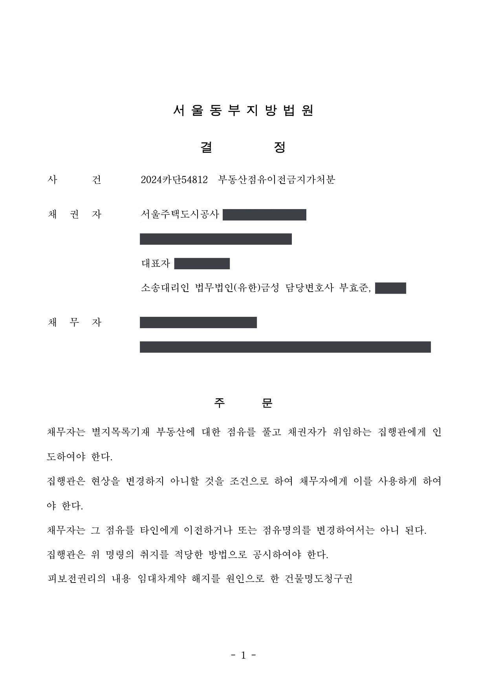

공공기관 임대 점포 인도·차임 청구소송 및 점유이전금지가처분
서울동부지방법원 2024가단160339 · 2024카단54812 · 담당변호사 부효준
판결문


사건의 요지
원고 공사가 임대차계약을 해지한 건물 4개 호실의 인도와 미지급 차임 등의 지급을 구한 사건입니다. 먼저 점유이전금지가처분으로 점유를 고정한 뒤, 피고가 다투지 않아 무변론 판결로 인도와 12,454,910원 및 인도 완료일까지 월 1,279,000원의 지급을 명하는 판결을 받았습니다.
사건의 주요 내용
원고 공사는 자신이 소유하는 건물의 4개 호실(각 25.41㎡)을 피고에게 임대하였다가 임대차계약을 해지하였습니다. 피고가 호실을 비워 주지 않자 원고 공사는 2024년 10월 먼저 점유이전금지가처분을 신청하여 결정을 받고, 이어 건물의 인도와 미지급 차임 등의 지급을 구하는 본안 소송을 제기하였습니다. 부효준 변호사는 가처분과 본안에서 원고 공사를 대리하였습니다.
본안의 청구는 4개 호실의 인도, 2024년 6월 17일까지 발생한 미지급 차임 등 12,454,910원과 지연손해금, 그리고 2024년 6월 18일부터 인도를 마치는 날까지 월 1,279,000원의 비율로 계산한 돈의 지급이었습니다.
원고 공사의 청구와 조치
- 본안에 앞서 '임대차계약 해지를 원인으로 한 건물명도청구권'을 피보전권리로 하여 점유이전금지가처분을 신청하였습니다. 소송 중에 점유자가 바뀌면 인도 판결을 받아도 집행할 수 없게 되므로, 먼저 점유를 고정해 둔 것입니다.
- 본안에서는 임대차계약이 해지되어 종료되었으므로 피고가 호실을 인도할 의무가 있고, 아울러 밀린 차임 등과 인도 완료일까지의 차임 상당액을 지급할 의무가 있다고 주장하였습니다.
법원의 결정과 판결
법원은 2024년 10월 점유이전금지가처분 신청을 받아들여, 채무자(피고)는 호실의 점유를 풀고 채권자가 위임하는 집행관에게 인도하되 집행관은 현상을 변경하지 않는 조건으로 채무자에게 사용을 허용하고, 채무자는 점유를 타인에게 이전하거나 점유 명의를 변경하여서는 안 되며, 집행관은 그 취지를 공시하도록 결정하였습니다. 담보로는 공탁보증보험증권이 제출되었습니다.
본안에서 피고는 소장 부본을 받고도 답변서를 제출하지 않았습니다. 법원은 2024년 12월 민사소송법 제208조 제3항 제1호, 제257조 제1항에 따라 변론 없이 원고의 청구를 그대로 받아들이는 판결을 선고하였습니다. 피고는 원고에게 4개 호실을 인도하고, 12,454,910원과 이에 대한 2024년 6월 18일부터 2024년 10월 2일까지 연 5%, 그 다음 날부터 다 갚는 날까지 연 12%의 지연손해금을, 그리고 2024년 6월 18일부터 인도 완료일까지 월 1,279,000원의 비율로 계산한 돈을 지급하라는 내용입니다. 소송비용은 피고가 부담하고 가집행이 허용되었습니다.
이 사건이 보여 주는 것
임대차가 끝났는데도 임차인이 비워 주지 않는 경우, 인도 소송을 내기 전에 점유이전금지가처분을 받아 두는 것이 안전합니다. 가처분이 없으면 소송 도중 점유자가 바뀌어 판결의 집행이 막힐 수 있습니다. 가처분 결정은 채권자가 결정서를 송달받은 날부터 2주가 지나면 집행할 수 없으므로(민사집행법 제292조 제2항, 제301조) 바로 집행을 신청하여야 합니다.
상대방이 답변서를 내지 않으면 무변론 판결로 신속하게 마무리됩니다. 이때 밀린 차임뿐 아니라 '인도 완료일까지 월 ○○원'의 차임 상당액을 함께 청구하여 두면, 판결 뒤 실제로 호실을 넘겨받을 때까지의 손해도 그 판결로 집행할 수 있습니다.
비슷한 처분을 받으셨다면
행정처분은 처분이 있음을 안 날부터 90일 이내에 행정심판이나 취소소송으로 다투어야 하고, 기간이 지나면 돌이킬 수 없는 처분은 집행정지를 서둘러야 합니다. 처분서를 받은 날짜부터 확인해 드립니다.